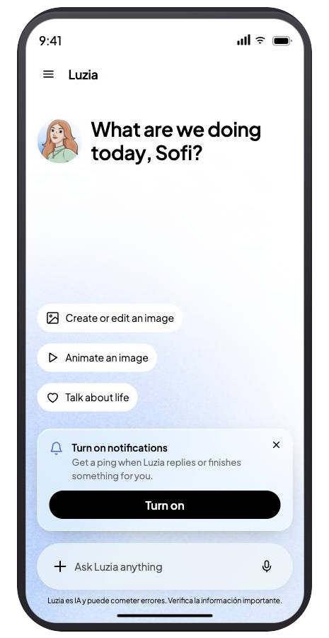
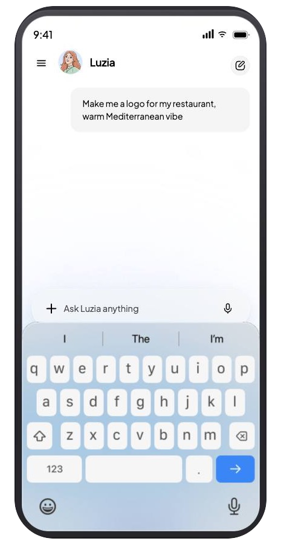
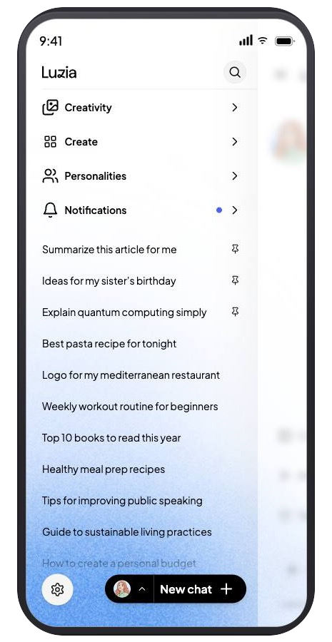

Felipe Amorim
Felipe Amorim01
Open directly into a new chat.
Login leads to chat. The welcome is short, icebreakers live near the composer and disappear when the keyboard is up or the composer has text. The New chat action moves to the FAB.
A product strategy and experience-design case for simplifying Luzia’s new-chat experience. It connects the first-release scope, the decisions needed to evaluate it and interaction explorations, including a voice-first onboarding prototype.

The existing home asked people to choose from characters, tools and destinations before they had started. The experiment opens directly into chat, giving new users a clear first action while keeping a considered path back to the features they rely on.
This onboarding prototype asks for a birthday in conversation, captures the spoken date and confirms it before continuing.
Login leads to chat. The welcome is short, icebreakers live near the composer and disappear when the keyboard is up or the composer has text. The New chat action moves to the FAB.
Keep visual tools, thread search, response settings and Plus in settings. The composer keeps Plus and the microphone; tool chips leave the composer.
Routines, services, widgets, standalone icebreakers, custom personalities, Plus promotion and search inside a chat leave v0. The character picker presents four named choices.
Target new users through first_version ≥ brutal_simplification_version. The initial proposal was 10–20%; the final decision recorded on 11 September was a 50/50 split.
A short welcome gives the screen a human voice. Three suggested actions show what Luzia can help with, while the composer remains the clearest invitation. Secondary features appear when the person asks for them.
Replace the long character-specific greeting with a concise prompt. Use two welcome states: show the Luzia mark after the idle window and on arrival from onboarding; keep it out of a fresh thread opened from the drawer or FAB.
Keep Plus and the microphone in a compact, single-row composer. Remove the tools chips. In the V1 exploration, carry idle, listening and generating in the gradient rather than swapping the whole control.
Move icebreakers to the bottom of the chat. Hide them while the keyboard is open or the person has started typing. On smaller screens, define how many fit instead of allowing them to crowd out the conversation.
Open the thread list from the side drawer; put Visual tools above the conversations. Keep the empty-thread New chat action hidden while it has nothing useful to do.
Offer four first-run characters from the FAB, with names beside the portraits. Bring the most-used choice closest to the opening tap; keep the fuller catalogue for a later, measured release.
These are captures from the interactive design prototype. The full prototype includes additional states, navigation, visual tools, routines, notifications, settings and both colour modes.


The interactive mockup moves through light and dark modes and shows how the welcome, composer, drawer and visual tools respond across the flow.
The welcome builds in sequence; the drawer pushes the chat surface; visual tools arrive from blur, then snap between cards. The composer gradient calms as the conversation takes over.
Sixty raw paints across four built sections were mapped to semantic roles. The mockup CSS now references the same tokens; 22 duplicated light/dark pairs became shared rules.
The avatar disc and nine tints still need tokens. The gradient awaits a published library ramp. These are documented follow-ups, not disguised as finished system work.
The live mockup covers a broad interaction model, while the experiment's v0 scope was deliberately smaller. This distinction keeps the case honest and makes the scope easier to follow.
Welcome, first-run nudge, chat and keyboard states, drawer, character picker, visual tools, notifications and settings.
Six onboarding steps across light and dark: login, date of birth by voice or keypad, confirmation and handover. These were cut from v0 on 10 September with age verification.
Chat search, routines, favourites and wider character discovery were considered beyond the first experiment.
Clear ownership keeps design execution moving while product questions go to product and leadership, and technical constraints are resolved with engineering.
Layout, copy, states, motion, responsive rules and front-end details. Design owns execution once scope is decided.
Examples: composer states, drawer behaviour, character names and small-screen icebreakers.
Audience, what is measured, which features return and the conditions for rollout. These decisions need product and leadership agreement.
Examples: rollout size, custom besties, routines and onboarding requirements.
Backend fields, native behaviour, analytics plumbing and defects. Resolve technical constraints with the responsible engineering owner.
Examples: deep links, thread routing and event targeting.
Editorial slot · replace before launchShow the constraint, the choice you made, and what that choice changed in the experience.
Gamification entry points were removed from control and treatment, and icebreakers moved to the bottom in both. These are not treatment deltas.
The bottom bar disappears, the thread list moves into a drawer and the character catalogue shrinks to four. Events tied to the old surfaces may stop firing entirely, not simply decline.
Control frames are 375 × 812 and treatment frames are 393 × 852. Read the comparison structurally; confirm chip state, tab labels and implementation before comparing pixels or events.